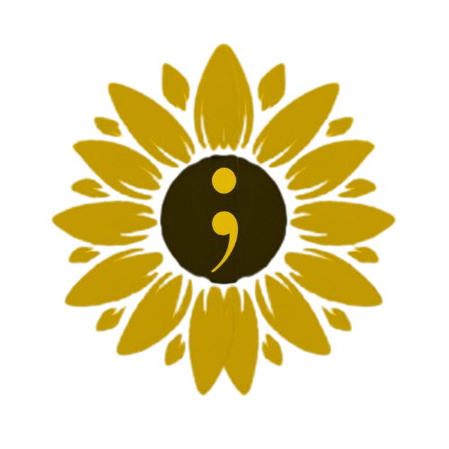

Falta de recursos acessíveis sobre saúde mental para os estudantes
O Setembro Amarelo é uma campanha que busca conscientizar a população sobre a importância de cuidar da saúde mental de jovens e adultos e prevenir o suicídio, principalmente entre os jovens. Falar sobre o assunto é fundamental para salvar vidas principalmente abordados nas escolas com mais frequência.